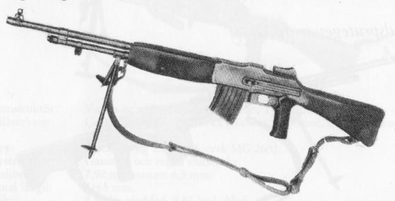

Kulstrutegevär m/21

Konstruktör: John Moses Browning, USA
Tillverkare: bl a Carl Gustafs Stads Gevärsfaktor, Eskilstuna
System: Gasuttag och reglat slutstycke
Kaliber: 6,5 mm
Längd: 1110 mm
Vikt: 8,7 kg (oladdat)
Riktmedel: Korn och diopterramsikte för 200 - 2000 m
Magasin: 20-skotts lådmagasin
Eldhastighet: teoretisk eldhastighet 500 skott/min. Praktisk eldhastighet 80 - 100 skott/minut
Effektiv skottvidd: 550 m
Ammunition: 6,5 mm ptr m/94 och 6,5 mm ptr m/41
.
.
.
.
.